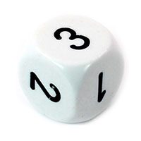

chapter 7: how functions communicate: parameters and return values
You've seen quite a few functions by now: functions in the video's, functions that you wrote yourself. And some of the built-in functions that are part of the languages or the browser or the header file. But many of these built-in functions had two features that our own functions didn't:
Serial.println("hello"),alert("hi there"), anddigitalWrite(LED_RED, HIGH)are examples of functions that accept extra input when you call them. Sometimes a single input, sometimes two or even more. If you create your own functions that accept extra input, you're creating functions that are very flexible and reusable: one function can replace many sections of code that are similar, but different in the details.- Other examples, like
abs(-100),analogRead(POTENTIOMETER),prompt("color:"), anddocument.getElementById("mainPicture")also take extra input, but they are also functions that produce some output. When your program calls one of these functions, they produce a result value that can be used in calculations/expressions, or stored in variables. The output of one function can even be passed directly as the input of another! You've seen this already in Chapter 1: rememberSerial.println( analogRead(0) );?
These first two videos show how to create functions that take input values. The third video shows how to create output from a function.
input for functions: giving arguments to parameters
This chapter has 3 video's. We're going to ask for your summary after you have seen all three. For now, make notes while watching the video's! And think about questions to send in.
7.1: questions
We're going to ask your summary after you have seen all three video's. For now, just send in any questions you have regarding the video above.
7.2: explain it yourself
Answer the following questions in your own words:
- What is a parameter?
- What is an argument?
- What is the difference between an argument and a parameter?
- What is the difference between a variable and a parameter?
7.3: argument or parameter?
- Point out all the parameters in the code (text and line number)
- Point out all the arguments in the code (text and line number)
7.4: questions
We're going to ask your summary after you have seen the next, third, video. For now, just send in any questions you have regarding the video above.
7.5: warming up
7.5.a: Write a function that hides elements on the page.
The function takes one input, which is a string and the id of an element on the page. When the function is called, the element named by the argument is made invisible by setting theElement.style.opacity = 0.
Create a HTML file with a few elements with ids, your new function, and a few calls to the function to hide several alements on the page.
Make sure your function has a meaningful name.
7.5.b: Write a function that has two parameters, and prints them both to the console.
7.5.c: Question:
Debugging becomes less of a drag if you give the new console-printing function a really short name. Why is that OK for this situation, but not in almost all other situations?
7.5.d: Make a function more generally useful
Change this function into a function that accepts two arguments: an id and a filename, and can change any image element on the page to any new image file.return values: producing output for expressions
In JavaScript, returning values works the same way as in Arduino. Except you don't have to write if the return value is text, a number, or something else (like what?).
7.6: questions
Just send in any questions you have regarding the video above.
7.7: summary
This is the moment where you're creating the summary. Make it a bit bigger than usual.
7.8: how would you like your random?
There is a built-in JavaScript function called Math.random(). It takes no arguments, and returns a random number between 0 and 1.
Use the JavaScript console to see what values you get if you call Math.random() several times in a row.
7.8.a: Write a function, without parameters, that simply returns the result from Math.random().
Give it a meaningful name that is still shorter than "Math.random". Test your function!
7.8.b: Increase the range
Create a similar function, but this one takes 1 parameter, called "max". It returns a random number between 0 and max.
Give this function a new name.
numberInRangeZeroToFive = numberInRangeZeroToOne * 57.8.c: Another one! now with a minumum
Again, create a similar function, but this one takes 2 parameters, called "min" and "max". It returns a random number between min and max.
Keep the function from the previous exercise (7.5.b) in the same file. It is extra cool if the code for the new function calls the function from the previous exercise.
7.8.d: Last one: create a die
The built-in function Math.floor(x) can be used to round numbers. For positive numbers, Math.floor will simply throw away everything after the decimal point. E.g. Math.floor(2.35) returns 2 and Math.floor(2.88) also returns 2.
Create a new JavaScript function, that returns a whole number between 1 and 6. Again, it's extra cool if the code for the new function calls the function from exercise 7.5.c.
7.9: area code
7.9.a: Why doesn't console.log(calculateArea(12,44)) work?
7.9.b: area recode
Change the area function in such a way that console.log(calculateArea(12,44)) would output 528. What would be a better name for this function?
7.10: squared
The given functions look a lot alike. This is usually a sign parameters can be used to make functions more generic. Make a function that can square any number.
7.11: objects and parameters!
You can pass both complete objects and entire arrays as arguments to a function.
Notice the fight function takes two objects as a parameter. Right now it returns an integer. This is a bit illogical. It would be better if the fight() function returned a new version of the player where the health has been updated. Functions can also have objects or arrays as return values. Change the function in such a way that it returns an updated version of the player after the fight. You should be able to call the fight() function like this:
The following exercise is about functions with parameters, not about security. Do not use code from this assignment in commercial applications.
7.12.a: password manager
The createPassword() function above takes a weak, but memorable password and turns it into a stronger password. This is how the function works:
- The function takes the passphrase and using the btoa() function, encodes it to a random looking string.
- the function than adds "a7" to the front of the string, and adds "%H" to the end of it to make the password confirm to most site's requrements.
- the function proceeds to return the string for you to use as a password.
Use the console to call the function with your name as an argument to see how it works.
7.12.b: password manager 2
Make a page that uses this function to change simple passwords in to stronger ones.
- Make an input field where a user can enter an easy to remember passphrase
- Make a div that is meant to dislay the generated passphrase
- Make a button that triggers a function that:
- Reads the contents of the password field
- Calls the createPassword() function with the contents of the field as the argument
- Uses the output of the createPassword() function to display the generated passphrase in the div.
7.12.c: password manager 3
It would be even cooler if the user could use the same simple password to generate different passwords for different services. Add a "service" parameter to the createPassword() function and use this parameter to add an extra component to our encryption. For convenience, add a dropdown with different services to the webpage.
- Use the code below to add a dropdown to your HTML.
- Modify the createPassword() function so it takes an additional parameter called service
- Append the value of the service parameter to the value that is encoded by btoa().
- Don't forget to pass the selected item of the selectbox to the createPassword() function as an argument.
7.12.d: password manager 4
The function below puts the string in the parameter on the clipboard, ready to be pasted by the user. Add this functionality to your program.
7.12.e: BONUS: reverse engineer
Somebody used your script for something nefarious. The police is interested in recovering original passwords created by the script. Create a function that reverses the encryption process. You may have to use the substring function and the atob() function